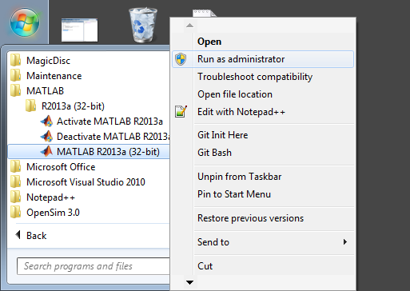
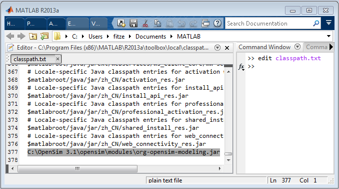
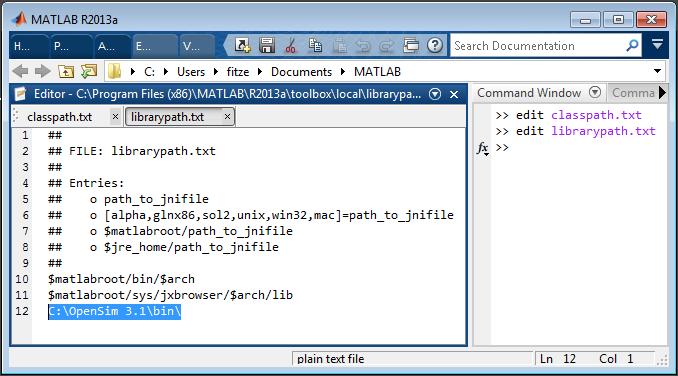
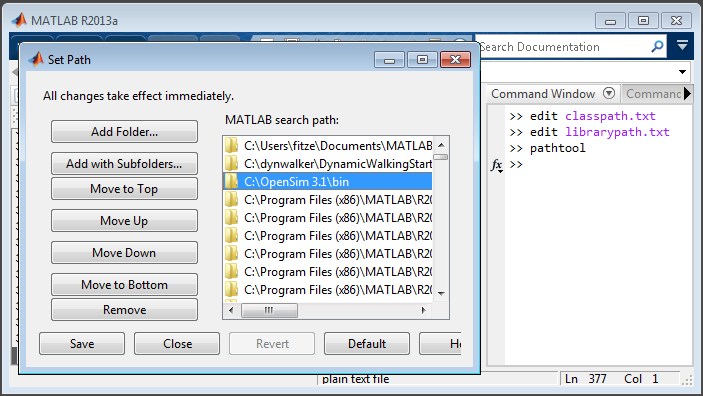

The system architecture of Matlab & OpenSim must match (install 64-bit OpenSim if you use 64-bit Matlab). Matlab setup and configuration instructions are below. |
What's Available?
- Access to the OpenSim API to create and simulate models (e.g. OpenSimCreateTugOfWarModel.m)
- Users can instantiate and run tools from setup files or programmatically (e.g. TugOfWar_CompleteRunVisualize.m)
- Repeated/batch runs of tools
- Users can write "main" programs similar to those written by C++ developers, while taking advantage of the Matlab environment and tools
- A visualizer for API users that can be invoked through Matlab
Limitations
- In this mode, there’s no access to the plotter (you can use Matlab’s native plotter) or the graphics window (use the model visualizer instead).
- Some internal Simtk classes (that belong to the SimTK namespace and simbody internals) are not available for construction, but the most commonly used classes are available as of version 3.1 (SimTK::Vec3, Vector, Mat33, State, Inertia).
Available Example Scripts
| Script Name | Description |
|---|---|
| OpenSimCreateTugofWarModel.m and TugofWar_CompleteRunVisualize.m | These scripts generate a simple tug of war model, run a simulation, and visualize the results. |
| prescribeMotionInModel.m | Script to create an OpenSim model with coordinates prescribed according to an input motion file. It uses a helper function defined in the script createPrescribedMotionModel. |
| setupAndRunAnalyzeBatchExample.m | This is a Matlab function that generates OpenSim Setup Files for the Analyze>MuscleAnalysis tool and runs the Analyze tool. You must run setupAndRunIKBatchExample first to generate the motion files used in this example. |
| setupAndRunIKBatchExample.m | Runs multiple inverse kinematics trials for the model Subject01 located in the subfolder "testData\subject01". User must specify the results directory (e.g. "IKResults"), the .osim model (e.g. "subject01_gait2392_scaled.osim"), and the .trc files (e.g. in folder "MarkerData"). To see the results, load the model and IK output in the GUI. |
| simpleOptimizerExample.m | Runs a simple optimization to find the elbow flexion angle where the moment arm of the biceps femoris short head is maximized. |
| simpleOptimizerObjectiveFunction.m | Runs model simulation for gvien coefficients, returns integration |
| strengthScaler.m | Function that loads a model and its muscles, then creates a new model where all muscles are scaled by a common scale factor. Takes 3 inputs: 1) the path and name of an existing OpenSim model, 2) the path and name of the new model to be outputted, and 3) the scale factor. If no input model names are given, the user is prompted to choose a model to scale and all muscle strengths are doubled. |
Learn more in the next section on Common Scripting Commands.
Setting up your Matlab Scripting Environment
These instructions assume that you've already installed the OpenSim, version 3.1 or later (see Installation Guide for more info). As note above, the system architecture of OpenSim should match your version of Matlab (64-bit or 32-bit)
Automated Setup
From OpenSim 3.2 onward we have included a script which automates the steps described below. Navigate to the the folder where you installed OpenSim, then find the Scripts > Matlab folder and use Matlab to run configureOpenSim.m. This script will update Maltab's system, class and library paths to include the OpenSim 3.2 libraries. Please note that this script will clean out any existing paths that contain the string 'opensim'. If you have existing paths containing this string that you would like to maintain, you will have to add OpenSim 3.2 libraries manually (see the steps below).
Manual Setup
If you are running OpenSim 3.1, please refer to the manual configuration guide below.
Launch Matlab as an Administrator
Find the location where you installed OpenSim (e.g. C:\OpenSim3.0, C:\Program Files\OpenSim 3.0). We will refer to this directory as OPENSIM_INSTALL_DIRECTORY. Substitute your specific directory in the instructions below. In the images, we use C:\OpenSim 3.1.
|  | You'll be editing files in the Matlab installation itself, and to do this we'll need to run Matlab as an administrator. To do so, right-click Matlab in your Start menu, and select Run as administrator. |
Tell Matlab about OpenSim's Java library (.jar)
|  |
|
Tell Matlab about OpenSim's C++ libraries, which the Java library depends on
The remaining changes deal with OPENSIM_INSTALL_DIRECTORY\bin.
|  |
|
Add OpenSim C++ libraries to Matlab's PATH variable
|  |
|
Wrap it up
- Close and restart Matlab, because your changes are not recognized until doing so.
- Test that everything is configured correctly: In the command window, type model = org.opensim.modeling.Model(); If there is no error, then it worked! You should see model in the Matlab Workspace.
- Now try out one of the Matlab example scripts. You can find these in the folder OPENSIM_INSTALL_DIRECTORY\sdk\Matlab (SDK stands for Software Development Kit).
Handling Java Exceptions
By default, if Java exceptions occur, Matlab will exit and save debug information to a log file in the current workspace. If this happens please send us the stack trace or crash report to fix. You don't need to setDebugLevel as of version 3.1. For previous versions you can call
OpenSimObject.setDebugLevel(3);
Troubleshooting
- If you're seeing errors of osimJavaJNI not in path, add the OPENSIM_INSTALL_DIR\bin to your system PATH variable
- If you're seeing errors saying failed dependencies with osimJavaJNI.dll, you would need to have Visual Studio redistribution package installed (which would come with any Visual Studio installation). You can just install the package files without Visual Studio on the Microsoft download site (For example 32-bit VS 2010 package is located here).
{kind=link}
{kind=link}
{kind=link}
{kind=link}